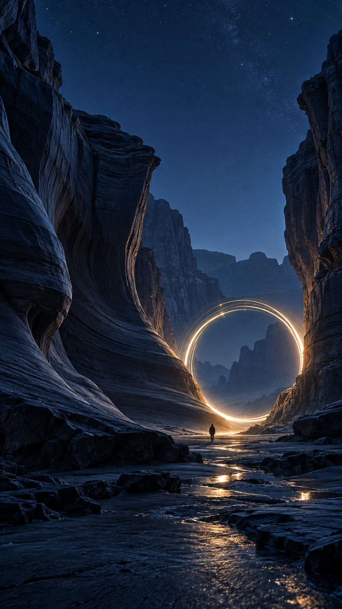
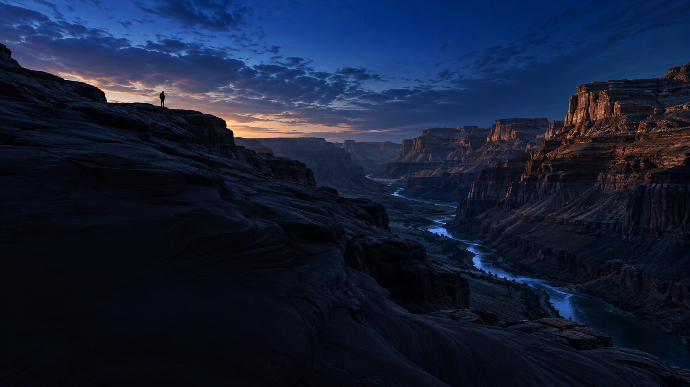
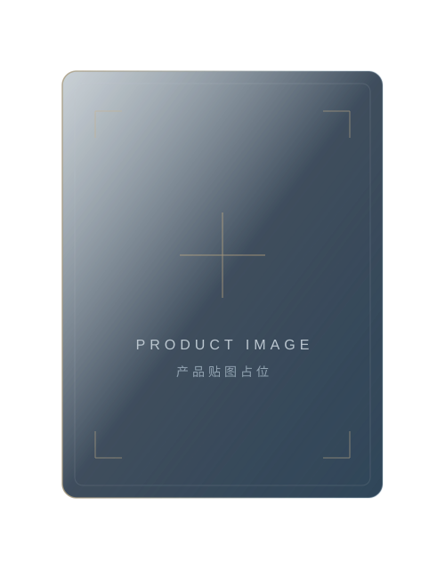
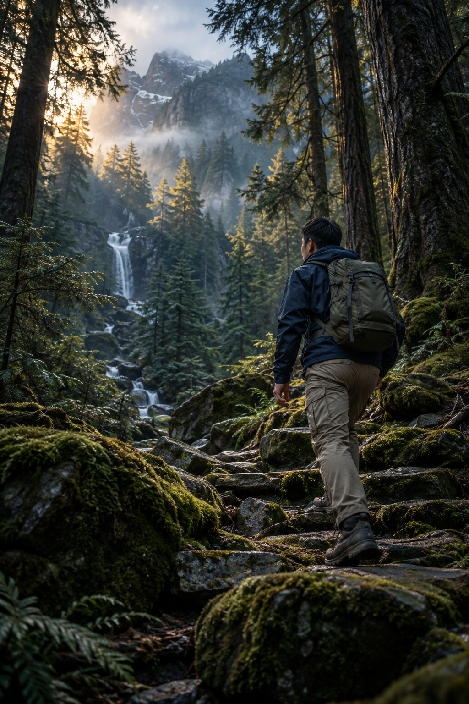
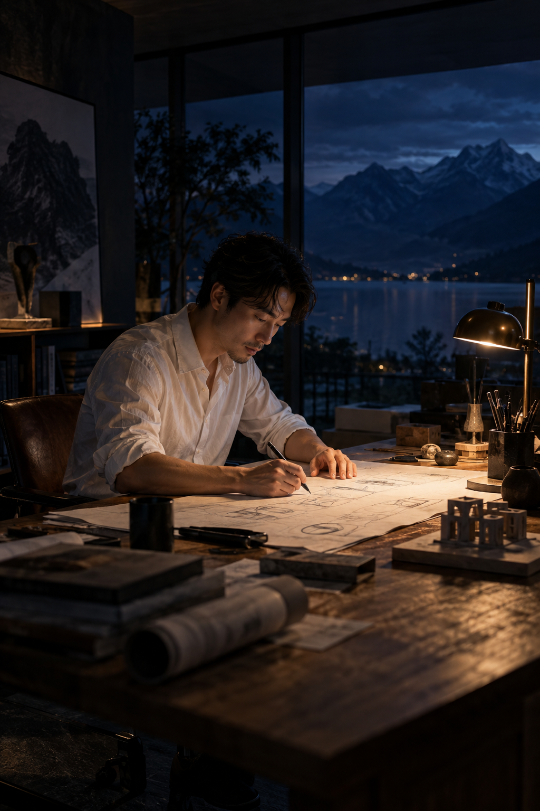

一段关于向往与行动的旅程
心有所向
即刻出发.
让视野，换一个方向。
让脚步，走进新的风景。
横屏观看，展开完整视野

一段关于向往与行动的旅程
让视野，换一个方向。
让脚步，走进新的风景。
封面已展开 · 向下滑动，阅读完整长卷

01 / OUR BELIEF · 文化核心
心之所往，是每一次出发的方向。
在旷野里，重新感受世界的尺度。
在行动中，让想法有了真实的形状。
不用急着抵达，沿途也有自己的答案。
02 / PRODUCT POSITION · 产品定位
产品名称 / 系列名称
这里呈现产品的核心定位。
用一句清晰的表达，说明它是什么，
以及希望传递怎样的设计理念。

03 / IN THE DETAILS · 产品介绍
产品名称 / 产品介绍标题
这里介绍产品的外观、规格与设计细节。
正式资料到位后，以准确的信息替换。
04 / UNDER THE STARS
抬头，是无边的可能。
把目光交给星空，
把答案留给自己。
留一点空白，容纳下一次向往。
04 / ABOVE THE ORDINARY
向上一步，世界就不同。
听见自己的呼吸，
也听见山风的回应。
未知的高度，藏在下一步里。
04 / FOLLOW YOUR OWN PACE
每一步，都有自己的节奏。
让脚步回应心里的热望，
让此刻成为出发的时刻。
不用追赶谁，奔向自己的远方。
05 / DIFFERENT PATHS · 人物画像
有人走进山野，有人专注创造，也有人把日常过成自己的作品。
06 / INTO THE WILD · 户外探索者
穿过一片安静的林，
听风、鸟鸣和自己的呼吸。
世界很大，足够装下许多问题；
脚下这一步，又让一切变得简单。
走进山野，也走近自己。

06 / MADE WITH CARE · 品质创造者
一张图纸，一次推敲，
把模糊的念头变成清晰的轮廓。
选择、调整，再重新开始。
那些不易被看见的耐心，
最终会留在作品的细节里。

06 / EVERYDAY ORIGINAL · 生活创作者
留出一点时间，认真做一杯咖啡。
尝试不同的比例，记录今天的灵感。
无需复制谁的标准，
把喜欢的细节慢慢积攒，
日常，也能成为自己的创作。
07 / STAY CONNECTED · 保持联系
把新的风景留给下一次出发。
在这里，继续记录与分享。
账号名称待提供
二维码待替换账号名称待提供
二维码待替换